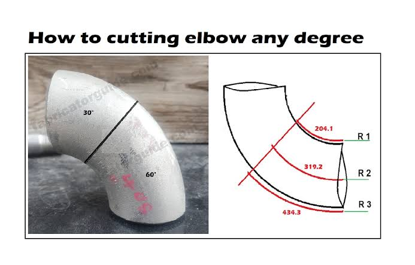
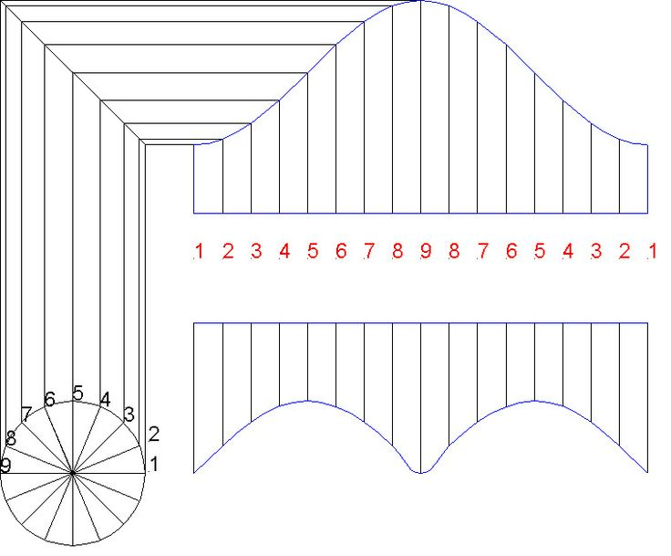

Easier entry: use USE CALC to drop the calculator answer
into a measurement box.
Simple Offset
OFFSET • TRAVEL • SETBACK
Read the drawing and the answer the same way: OFFSET is the centerline change, TRAVEL is the diagonal pipe between fittings, and SETBACK / ADVANCE is the straight distance between fitting centers along the original run.
Rolling Offset
T • R • V • H • x
Match the picture: V = Vertical Offset, H = Horizontal Offset, x = True Offset, T = Travel, and R = Run between angles.
Spool / Cut Length
Field Tools
Fast field math: choose a tab above so only the tools you need are on screen. Measurements use the same feet / inches / fraction pad throughout the app.
Pipe Wrap / Degree Marks
Uses actual pipe OD
Pipe Elevation
Top / CL / bottom
Slope / Pitch
Rise ↔ percent grade
Pipe Volume
Enter actual inside diameter
Inside diameter changes with schedule/material. Enter the actual ID instead of assuming a wall thickness.
90° Elbow Cut-Down Helper
TURN A 90 INTO ANY SMALLER ANGLE

1 • KEEP ONE FACTORY END
2 • MAKE 4 MARKS FROM THE SAME ZERO
1 • PICK THE BW 90Select long-radius or short-radius so the app uses the loaded 90° center-to-end A dimension.
2 • ENTER FINISHED ANGLEExample: 40°, 30°, 22.5°, or any angle below 90°.
3 • CHOOSE THE END YOU KEEPLeave that factory bevel untouched. That end is your measurement reference.
4 • MEASURE THE FINISHED PIECEMeasure HEEL / SIDE / THROAT / SIDE from the kept factory bevel to the new cut line. The dimensions describe the elbow you will actually install.
WORKED CUTBACK EXAMPLE — 4" LR 90 → 40° Keep one factory bevel as ZERO and measure on the elbow piece you will install. Mark HEEL 5-3/4" • SIDE 4-3/16" • THROAT 2-5/8" • SIDE 4-3/16", then connect those four marks for the new cut line. Original 90° takeout A = 6". Finished 40° takeout ≈ 2-3/16", so the TAKEOUT CUTBACK ≈ 3-13/16". Example values are rounded to the nearest 1/16".
Butt-weld field layout: for the normal one-end cut, choose the factory bevel you are keeping and use it as ZERO. Measure along the elbow you are keeping to the new cut line at HEEL / SIDE / THROAT / SIDE. The four measurements below describe the finished piece you will install — not the scrap piece. Everything beyond the new cut line toward the other original end is cut off. The finished field-cut takeout is A × tan(finished angle ÷ 2).
Any-Angle Offset
Use any fitting angle
Centerline geometry only. Fitting takeoffs are still handled separately.
Special Offset — Two 90s Welded Together
NO STRAIGHT PIPE BETWEEN ELBOWS
For two identical elbows touching each other, offset = 2R(1 − cos θ). The calculator solves θ and gives the HEEL / SIDE / THROAT marks for each 90 you keep.
Equal Spread Offset
KEEP PARALLEL LINES EQUALLY SPACED
Travel ahead per adjacent line = spacing × tan(turn angle ÷ 2). At 45° with 8" spacing this is about 3-5/16" per line.
Bolt Circle / Chord Spacing
Layout from actual BCD + hole count
Use the actual bolt-circle diameter and hole count from the flange/drawing. This tool does not assume a flange standard.
Square / Diagonal Check
Rack • frame • support layout
Pipefitter Formula + Cheat Sheet
Fast field reference
Rolling true offset√(vertical² + side²)
Rolling orientation angleatan(vertical ÷ horizontal)
Offset traveloffset ÷ sin(angle)
Offset setback / advanceoffset ÷ tan(angle)
22.5° offsettravel × 2.613 • setback × 2.414
30° offsettravel × 2.000 • setback × 1.732
45° offsettravel × 1.414 • setback × 1.000
60° offsettravel × 1.155 • setback × 0.577
Pipe circumferenceπ × outside diameter
Degree mark around pipecircumference × degrees ÷ 360
Equal wrap spacingcircumference ÷ number of spaces
For a 90° saddle use a square wraparound reference line. For an angled saddle first lay out the miter line at the complement: 90° − branch angle.
Draw one straight line down the branch. That is Station 0.
Wrap a tape around the pipe and mark equal stations using the
station spacing.
At each station, measure the listed distance
FROM THE WRAP / MITER REFERENCE LINE.
Connect the marks smoothly. That is the saddle cut line.
How to Lay Out the Saddle
STATION / ORDINATE REFERENCE

Ordinate numbering around one full wrap — do not repeat the closing 0: 8 divisions: 0 1 2 3 4 3 2 1 16 divisions: 0 1 2 3 4 5 6 7 8 7 6 5 4 3 2 1
1 • END VIEW — MARK STATIONS AROUND THE PIPE
2 • IMAGINE THE PIPE UNWRAPPED FLAT
What the table means: follow the mirrored ordinate numbers around the branch. The last physical mark closes back onto the same Station 0 line, so the sequence ends at 1 instead of printing a second 0. For a 90° saddle measure from the square wrap line; for an angled saddle measure from the miter line. Connect the ordinate marks smoothly.
Choose Saddle Type by Picture
Tap the shape that matches the field layout
Formula + Ordinate Marks
Calculated from the saddle type you selected
Wrap point
Ordinate line
Degrees
Around from 0
MEASURE BACK FROM WRAP LINE
Field check the pattern before final cutting.
Fitting Takeoffs
Butt-Weld Fittings
ASME B16.9 dimensional family
Socket-Weld Fittings
ASME B16.11 dimensional family
Threaded Fittings
Ward Class 150 where loaded • other patterns are maker-specific
Grooved Fittings
Victaulic / Gruvlok catalog center-to-end
Valve face-to-face dimensions vary by valve type, pressure class, end
connection, and manufacturer.
Save Your Fitting / Valve Takeoff
Professional ISO / Spool Drawing
PIPE SPOOL ISOMETRIC / PLAN / ELEVATIONTAP GRID POINTS TO DRAW • ZOOM • STAMP SYMBOLS
JOB / SPOOL INFO — TAP TO COLLAPSE
ISO GRID
No active leg
Use the grid for fast sketching. Use Spool Legs below for exact C-C and cut lengths.
One shared drawing: draw or edit in ISO, Plan, or Elevation and the other two views convert automatically from the same pipe and fitting geometry. Finger taps always land on the nearest grid point. Hold and drag either amber end handle to shorten, lengthen, or change the slope. Corners stay pipe-only until you add a fitting yourself.
DRAWING VIEW — AUTO CONVERTOne shared drawing. Switch views and the pipe, fittings, dimensions, and edits convert automatically.
Tap the first grid point to start a pipe run.
No field photo loaded. The photo stays on this phone/browser session and is not uploaded.
Selected itemEdit it without leaving the drawing.
Pipe first, fittings second: every ISO pipe segment creates a matching Spool Leg, but elbows and fittings are never added automatically. Use the single fitting tray below when you need a symbol. Moving a fitting does not move the pipe.
FITTINGS / SYMBOLS — ONE TRAY
Selected Pipe / Fitting
Tap a pipe section or fitting.
Normal pipe stays on the standard ISO diagonal and vertical axes. For an offset, rough in the direction and enter RISE and RUN. The offset leaves the normal grid plane and falls between the nearest diagonal and vertical axes. Equal RISE and RUN produces the halfway 45° plane; other calculated angles stay between those axes. Offset travel is drawn to the same visual measurement scale as the rest of the pipe, and no compass-direction label is added.
PIPE SYMBOL LEGEND / ASSISTANCE
Chart-style symbols: elbows, standard tee, tee looking up, tee looking down, stub-in, olet, reducers, flanges, union, valves, strainer, cap, flow, slope and level reference. Choose one from the single fitting tray, tap to stamp it, then drag on the grid or rotate it. Use ROTATE 90° for sideways orientation.
Spool Legs — Auto from ISO Grid
ISO Cut List
Add a leg and calculate the spool.
Leg
Type
Size
C-C
Fitting A
Fitting B
Cut Length
Status
Loaded data: welded fitting takeoffs use the app's ASME B16.9 dimensional table. Screw fitting takeouts use the loaded Ward Class 150 starter table and are manufacturer-specific. Use CUSTOM for valves, different manufacturers, or any fitting/size not loaded. Verify shop/project requirements before cutting.
Fusion Pipe
Field reference — verify the qualified procedure: heater temperature, timing, pressure and cooling can change with material, SDR/DR, machine and project specification. Manufacturer instructions and the job-qualified fusion procedure always control. Socket “takeoff” below is pipe insertion / engagement depth; fitting center-to-end dimensions remain product-specific.
Aquatherm Socket Fusion
2024 Aquatherm Installer Manual
NUPI / NIRON Socket Fusion
2022 NIRON Design & Installation Manual
PP Butt Fusion
Aquatherm / NUPI procedure reference
HDPE Butt Fusion
PPI TR-33 / ASTM F2620 reference
HDPE Socket Fusion
ASTM F1056 / Performance Pipe reference
Tubing
Field guide: Lay out tubing from finished points and the actual bender's centerline radius (CLR). Tube OD, wall/material, tooling, springback, and the bender's own mark/arrow conventions control the finished result. Make a test bend when the tooling is unfamiliar.
Bend layout from finished points
CENTERLINE METHOD
90° bend — read this picture from left to right
T1/T2 = where straight tube becomes the bendC = imaginary corner if both straight centerlines were extendedCLR = radius from bend center to tube centerline
Use it: measure the finished point to C → calculate setback → locate T1/T2 → convert that geometry to the actual bender's start/arrow mark.
Start with the required finished centerline points: where each straight leg must end or intersect if extended.
Choose the actual bender/die and its CLR. For a bend angle θ, the centerline arc length (bend allowance) is BA = CLR × θ in radians = π × CLR × θ / 180.
For a simple bend between two intersecting straight centerlines, the tangent setback from the theoretical intersection is SB = CLR × tan(θ/2). Mark the tangent locations on both legs.
Convert the geometry mark to the bender's required start/arrow mark. Do not assume every hand, ratchet, rotary-draw, or hydraulic bender uses the same arrow location or gain/deduction.
Keep one datum end whenever possible. Measure every later finished point from that datum instead of chaining mark-to-mark; this prevents small errors from accumulating.
After bending, verify leg length, angle, plane and tangent location before making the next bend. Correct the layout for measured springback/tooling behavior rather than blindly adding error to the next mark.
Bend allowance vs setback vs gain: bend allowance is the length along the tube centerline consumed by the curved arc. Setback is the straight-line distance from the theoretical centerline intersection to a tangent point. “Gain,” “deduct,” and arrow/start-mark offsets are bender/layout-system terms and can depend on the tool—use the bender's verified data rather than treating them as universal constants.
Two-bend offset
PARALLEL LEGS
For two equal bends that leave the entering and exiting tube parallel, using bend angle θ measured from the original straight direction: travel between corresponding bend points = offset ÷ sin θ. The straight advance/run is offset ÷ tan θ. This is centerline geometry; the exact marks placed on the tube still depend on the bender's mark convention and CLR.
Multi-bend layout
Draw or sketch the finished centerline and number bends from the datum end.
Calculate every finished tangent/intersection location before touching the tube.
Write the bend angle and rotation/clock position beside every mark.
Make bend 1, return to the datum, re-measure the next finished location, orient the plane, then make bend 2. Repeat from the same datum.
When a previous bend prevents a direct tape pull, transfer the datum with a straightedge, square, laser, fixture, or known reference—not by estimating from the last bend.
Bend plane, orientation & rotation
CLOCK THE TUBE BEFORE BENDING
Put a longitudinal reference stripe on the tube and treat it like a clock. A bend made with the stripe at the same clock position stays in the same plane. Rotating the tube before the next bend changes the plane. Record rotation consistently—viewing from the same datum end every time—so “clockwise 45°” never reverses halfway through the spool.
For a rolled offset, true offset = √(side² + vertical²). Rotation from the side/horizontal reference = atan(vertical ÷ side). Then use that true offset in the normal offset calculation. Mark the rotation on the tube before placing it in the bender.
SAG method — Setback, Advance & Gain
FULL TUBE LAYOUT
SAG means Setback, Advance, Gain. It is a full-layout method used to put the bend information on the straight tube before bending. It is especially useful for multi-bend pieces because every bend can be laid out from the drawing/datum before the first bend changes the shape of the tube.
The three numbers
Setback (S): distance from the theoretical centerline intersection back to the tangent/start side of the bend. S = R × tan(θ/2).
Advance (A): developed centerline length of the curved bend. A = R × θ in radians = R × θ × π/180.
Gain (G): the straight-corner length saved by replacing two setbacks with the arc. G = 2S − A. Gain is useful when converting finished centerline dimensions into straight-tube developed length.
How to mark a bend with SAG
Pick one datum end and keep every dimension referenced from that same end unless the drawing specifically requires otherwise.
On the sketch, extend the incoming and outgoing tube centerlines until they intersect. That theoretical intersection is the bend center/reference point C.
Measure the drawing dimension from your datum to C and put the C mark completely around the straight tube.
Calculate setback for the actual bender CLR and bend angle. From C, measure back toward the datum by the setback and mark S.
From S, measure forward by the calculated advance and mark A. You now have three marks for that bend: S, C, A. Cross out or identify C so S/A cannot be confused at the bender.
Lay out the next theoretical centerline point from the drawing. Use the gain/developed-length relationship rather than simply chaining finished dimensions on the straight tube. For a multi-bend run, number every bend and write its angle plus rotation/clock direction beside the marks.
At the bender, use the correct S/A relationship for that bender and bend direction. Right-hand, left-hand and reverse bends may require approaching the marks differently; do not silently flip the datum or viewing direction.
After each bend, verify angle, plane and finished point. Springback belongs to the actual tube/material/tool combination; make a test bend and record the correction when precision matters.
Worked 90° example
With a 2.500 in CLR and 90° bend: setback = 2.500 in; advance = 3.927 in; gain = 1.073 in. If C is at 20.000 in from the datum, S is at 17.500 in. From S, measure forward 3.927 in to place A at 21.427 in.
Do not mix systems mid-piece: SAG geometry is universal, but the physical alignment mark on a particular bender is not. Verify its radius, left/right orientation, start/zero marks and springback behavior before committing a multi-bend spool.
Tube bend design & manufacturability
LISTER TUBE BENDING DESIGN GUIDE
This page turns the uploaded design guide into field-friendly checks. These are design/manufacturing guidelines, not a substitute for the actual bender, tooling, material procedure, or project specification.
Compression bendingTube is formed around a former while one end is restrained. Common for simpler/manual work and smaller tube.
Draw bendingTooling grips and draws the tube around a former. Tooling is tied to tube OD and bend radius; thin-wall work may need a mandrel.
Roll / push bendingTube passes through rollers to make large sweeping radii. Useful when a draw-bend former would become impractically large.
Radius rules from the guide
2 × DGuide's standard draw-bend radius rule of thumb. Example: 20 mm OD → 40 mm centerline bend radius.
< 2 × DTighter draw bends are possible, but the guide warns they commonly need more costly tooling and may require mandrel support.
7 × DGuide's conservative minimum roll-bending radius rule of thumb; wall thickness and material still matter.
Multi-bend pieces
Keep draw bends on one radius when practical. Single-stack machines only carry one tooling set at a time.
Different draw radii may require multi-stack equipment. Very close bends in different planes can require cut-away or bespoke tooling.
Large-radius multi-bends are generally better suited to push/roll bending; mixed tight and sweeping curves may require a machine with both draw and push capability.
Watch for self-fouling shapes: loops or “knots,” bends near/over 180°, tight coils, and long legs that can hit the machine or floor.
Before finalizing an unusual part, check the chosen tube OD, wall, material, radius and bend sequence with the shop that will actually bend it.
Common tube sizes shown in the guide
Imperial OD / wall
3/16 in × 0.71 mm; 1/4 and 5/16 × 0.91 mm; 3/8 × 1.22 mm; 1/2 and 5/8 × 1.63 mm; 3/4 and 7/8 × 2.03 mm; 1, 1-1/4, 1-1/2 and 2 in × 3.25 mm.
Metric OD / wall
4, 6, 8, 10 mm × 1 mm; 12 and 15 × 1.5; 16 × 2; 18 × 1.5; 20, 22, 25, 28 × 2; 30 and 35 × 3; 38 × 4; 42 × 3 mm.
Important: bend radius in this guide is measured to the tube centerline. Tool availability can matter as much as geometry, so a “possible” radius is not automatically the economical or available radius.
Blue Book field math companion
W.V. GRAVES TOPICS + STANDARD TRIG
The Pipe Fitters Blue Book includes common piping angles, rolling offsets, special offsets, pipe bends and trigonometry tables. This quick page uses the same kinds of field problems with standard geometry; it does not reproduce the book's copyrighted tables or pages.
Common two-bend offset multipliers
Bend
Travel = offset ×
Run = offset ×
15°
3.864
3.732
22.5°
2.613
2.414
30°
2.000
1.732
45°
1.414
1.000
60°
1.155
0.577
Travel multiplier = 1 ÷ sin(angle). Run multiplier = 1 ÷ tan(angle). Use centerline dimensions and then apply the actual fitting/bender takeoff convention.
Rolling offset
True offset = √(side² + rise²) Roll angle from the side reference = atan(rise ÷ side). After finding true offset, use the normal offset travel multiplier for the bend angle.
Pipe bend quick geometry
Setback = R × tan(θ/2) Arc / advance = R × θ × π/180 Gain = 2 × setback − arc
Field sequence: solve the true geometry first, keep one datum, mark bend number + angle + rotation, then translate the mark to the actual tool. Do not mix fitting takeoff, tube-bender arrow marks and pure centerline geometry as if they were the same number.
Real bend & bender photo references
VISUAL CHECKS
Use these real-world references to connect the diagrams to actual tubing. Photos are references only; dimensions still come from the drawing and the actual bender/tooling.
Real stainless bend showing how CLR relates to tube diameter and the finished curve. Open source
Hand tube bender in use
Swagelok's tube-bender page includes an actual hand-bender-in-use photo plus hand and bench-top bending references.
The black-and-white bend picture you showed is the right kind of reference for teaching CLR, OD, ID, wall thickness and bend angle. The LAYOUT and SAG diagrams in this tab use those same geometry concepts, while these links/photos show what the tooling and finished tubing look like in the field.
Pipefitter Manual
Actual uploaded Audel Pipefitter's and Welder's Pocket Manual — full pages, tables, diagrams and index.
Reference edition: This is the actual uploaded 2003 manual, not a shortened rewrite. For code-, product-, safety- and procedure-sensitive work, current controlling documents still govern.
Pipefitter Search
Offline field reference: quick original summaries and shortcuts to the calculators already in this app. Project drawings, codes, manufacturer instructions, qualified procedures, and current safety rules control the work.
Reference + Flange Torque
NPS Outside Diameter
Quick Trig
Angle
Travel multiplier
Run multiplier
Flange Bolt → Wrench Size
5/16" THROUGH 1-1/2" • EVERY 1/16"
Bolt size
Standard hex
Extra heavy / heavy hex
Standard vs extra heavy: common published nominal sizes use their standard across-flats wrench values. Intermediate 1/16" bolt diameters that are not common standard nominal fastener sizes are shown as calculated field references and should be verified against the actual nut/head. Heavy-hex values follow the larger across-flats family represented by the book chart. The torque helper shows both sizes whenever its flange table includes the bolt diameter.
Flange Bolt Sequence
Start anywhere • label clockwise left → right
Bolt numbering and torque level are separate. Use the number order above for every pass. Follow the gasket/manufacturer/plant procedure for the required torque levels and final check.